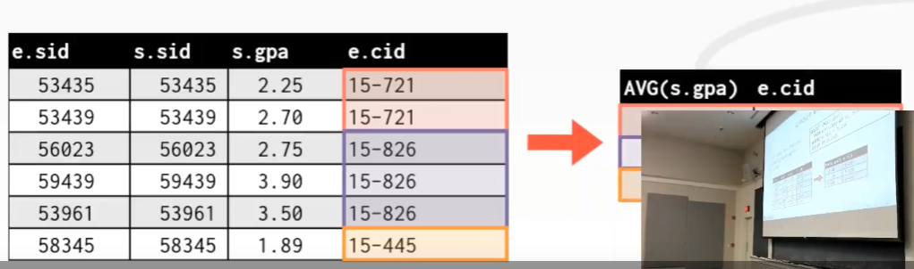

注: 本文首发我的 b 站专栏文章CMU 15-445/645-笔记-02-高级SQL
课程目标
Relational Languages
SQL 的历史
- 除了 IBM 推出的 SQL 之外，还有另一个主流是由伯克利推出的 Ingres
- 而 PostgreSQL 是由开发 Ingres 那帮人开发的，所以才被称之为 “Post” “gre” “SQL”，与 “In” “gres” 对应，因为是在 Ingres 之后才出现的
- 开发 Ingres 那帮人有自己的语言，叫 Quel
- 英国有个人为他的编程语言也取名叫 SQL，IBM 因此与这个人产生版权以及商标纠纷
- 当 IBM 推出了 DB2 和 SQL 时，Oracle 也在同时支持 SQL
- SQL 一直在发展，推出很多新特性
- 现在只有非常少的数据库系统通过 SQL:2016 标准
SQL 并不是一门单一的语言，它是一些东西的集合
- DML: 类似 insert/update/delete/select 命令
- DDL: 跟 schema 有关，通过定义 schema 创建表来存数据
- DCL: 跟安全性授权相关
- lists，也就是列表，可以有重复元素，是有序的
- sets, 也就是集合，没有重复元素，是无序的
- bags, 允许元素重复，无序
Example Database
Aggregates 聚合函数
用 ““ 代替 login
““ 是 SQL 中的特殊关键字，代表该 tuple 中所有属性更进一步，用 “1” 代替 “*”，每数一个 tuple，tuple 的数量就 +1
一般来讲建议使用 “COUNT(1)”
可以在单个查询中放入多个聚合函数
DISTINCT
得到去重数据时使用一个错误的例子，在聚合函数之外输出其他 columns 会 undefined
如何解决上面的错误例子？使用 GROUP BY
基于某个属性把想要的 tuple 放到一起
物以类聚的结果
新增一个 s.name
数据过滤，使用 HAVING
所谓查询优化，可以用 GROUP BY 来做，统计小于某个值的一些集合的数量，或者通过 HAVING 做一些过滤操作，那么要查找的数据集就小了，自然也就快了
字符串操作
不同数据库对字符串的处理SQL 标准规范有说，所有的字符串，例如 varchar、char、和 text field，它们必须区分大小写，并且使用 单引号 来进行声明
‘%’ 和 ‘_’
- ‘%’: 匹配一个或者多个字符
- ‘_’: 匹配一个字符
对于字符串函数、数学函数和日期函数来讲，它们可以出现在查询中的任意位置
你可以把它放在 SELECT/HAVING/或者其他条件语句中等
‘||’
SQL 标准下可以使用 ‘||’ 把字符串连起来Postgres 和 Oracle 大概是所有数据库系统中遵循 SQL 标准做的最好的
- Postgres ~= Oracle > SQL server > DB2
- SQLite 还行
- MySQL 最差
DATE/TIME 操作
注意这里记录用的是 时间戳，但是当你对时间进行操作，提取其中的信息时，结果会变得不可靠
比如对日期进行加减处理，三个数据库 SQL 的不同写法
- PostgreSQL
- MySQL
SQLite
SQLite 居然是最流行的。。。最初由 Richard Hipp 和其他两人开发，手机安卓应用很多前端数据库就用的是 SQLite，很多桌面应用比如 Photoshop 和 ILLustrator，内部也运行 SQLite
顺便互联网在美国兴起的时间居然是 2000 年代早期。。。
MySQL 是 Oracle 的，所以 Oracle 有 MySQL 的版权，但 SQLite 没有
输出重定向
即你输出的结果可以保存到另一张表中
- 可以用 INTO
- 或者用 CREATE TABLE
或者用 INSERT INTO

输出控制
如果想要输出结果变得有序，使用 ORDER BY，因为 SQL 是基于 bag
代数，它是无序的，所以需要使用这个想要在输出列表中加属性，可以接 DESC/ASC
限制输出可以用 LIMIT
可以在 LIMIT 后面加 OFFSET
OFFSET 的意思是，在限制返回 tuple 的数量之前，需要先跳过多少个 tuple，当跳过这么多你设置的 tuple 之后，再开始返回数据
嵌套查询（难的优化的东西来了！）
即在查询的内部再嵌套一个查询一个嵌套查询例子，SELECT 嵌 SELECT（实际上这也可以用 JOIN 来实现）
为什么这种方式很慢，实际上这里可以理解为有俩 for 循环查询，因为要对这个表里面每个 tuple 遍历一遍，然后对于每个 tuple 也要遍历一遍，用 JOIN 可以优化
用 IN 来优化
其他查询优化操作符
使用 ANY 来优化
SELECT 嵌套也可以不用写在 WHERE 中
一个查询没有学生注册的所有课程的例子，注意这个例子中使用了 NOT EXIST，逻辑相当于取了个反
内部查询可以引用外部查询的东西，但是反过来不行
window 函数
window 函数会对一个 tuple 子集进行函数计算，并将它们聚合成一个结果。输出每一行数据，并在其后面追加一个聚合字段所表示的数据这里的 OVER 有点像 GROUP BY 的意思
一个例子
输出结果如下
可以看到后面增加了一个 row_num 的字段
- OVER 关键字的作用是当计算 window 函数时，指定一种组合 tuple 的方式
使用 PARTITION BY 指定 group
输出如下
根据 cid 对它们进行分组，每一组内按 row_num 的顺序排列
在 window grouping 中也可以使用 ORDER BY
一个例子，查询每门课中最高分的学生
在这个内部查询（红色部分表示的）中，遍历整个 enrolled 表，对于每个 tuple，基于 cid 来对它们进行分组
RANK() 这个聚合函数会对每一个组进行 rank 排序
注意此处的 ‘ranking.rank’ 实际上并不存在于数据库中，它只存在于这个查询之中（感觉像是一个临时变量
最终的结果如下，PostgreSQL 支持这个语句
RANK() 函数会根据排序后每个 tuple 在输出列表中出现的现后顺序来进行计算
如果是 SQL 为
SELECT *, RANK() OVER() AS rank FROM enrolled;，那么就是如下的结果rank 处的值都是 1，因为这里面并没有排序，所以所有记录中的 rank 都是 1
这里的例子中，如果没有 ORDER BY，就没有 rank
CTE（Common Table Expressions）公用表表达式
这个感觉有点像是可以把一些公用的东西抽出来，然后给其他 SQL 引用的感觉它和嵌套查询非常类似，可以将一个查询的输出结果作为另一个查询的输入，但某些 功能 CTE 能做，嵌套查询做不到
一个更复杂的例子
将输出的 col1 和 col2 与 cteName 中的查询语句中的 name 进行绑定，然后在下面的 SELECT 语句中就可以直接引用 col1 和 col2
例子，在 enrolled 表中找到最大的学生 id
那么问题来了，这个跟嵌套查询有啥区别呢？
在 CTE 中可以递归，但是嵌套查询不能（所以感觉像是声明了一个函数类似
东西？）
比如打印 1 到 10，注意: 不带 ALL 的 UNION 操作会将重复结果移除主要逻辑就是调用之前的 CTE 中的 tuple 作为输出结果。
在这个例子中，会生成只有一个属性的表（counter），调用一个 SELECT 来获取这个 tuple，然后对它进行 +1，这样就生成了一个新的 tuple。接着继续上述操作，直到 WHERE 条件无法匹配为止
总结
在理想情况下，可以无需将数据存放到本地，或者来回移动，就能对整个查询进行计算